STM32F429自举模式
● 自举模式
存储器采用固定的存储器映射，代码区域起始地址为 0x0000 0000(通过 ICode/DCode 总线访问)，而数据区域起始地址为 0x2000 0000。在 STM32F4xx 中，可通过 BOOT[1:0] 引脚选择三种不同的自举模式，如表 3 所示：

复位后，在 SYSCLK 的第四个上升沿锁存 BOOT 引脚的值。复位后，用户可以通过设置 BOOT1 和 BOOT0 引脚来选择需要的自举模式。
BOOT0 为专用引脚，而 BOOT1 则与 GPIO 引脚共用。一旦完成对 BOOT1 的采样，相应 GPIO 引脚即进入空闲状态，可用于其它用途。
器件退出待机模式时，还会对 BOOT 引脚重新采样。因此，当器件处于待机模式时，这些引 脚必须保持所需的自举模式配置。这样的启动延迟结束后，CPU 将从地址 0x0000 0000 获 取栈顶值，然后从始于 0x0000 0004 的自举存储器开始执行代码。
● 物理重映射
选择自举引脚后，应用程序软件可以将某些存储器设定为从代码空间进行访问（这样，可通过 ICode 总线而非系统总线执行代码）。这样的修改通过在 SYSCFG 控制器中编程 SYSCFG 存储器重映射寄存器（SYSCFG_MEMRMP）来实现。
因此可重映射以下存储器：
— 主 Flash
— 系统存储器
— 嵌入式 SRAM1 (112 KB)
— FSMC 块 1(NOR/PSRAM 1 和 2)
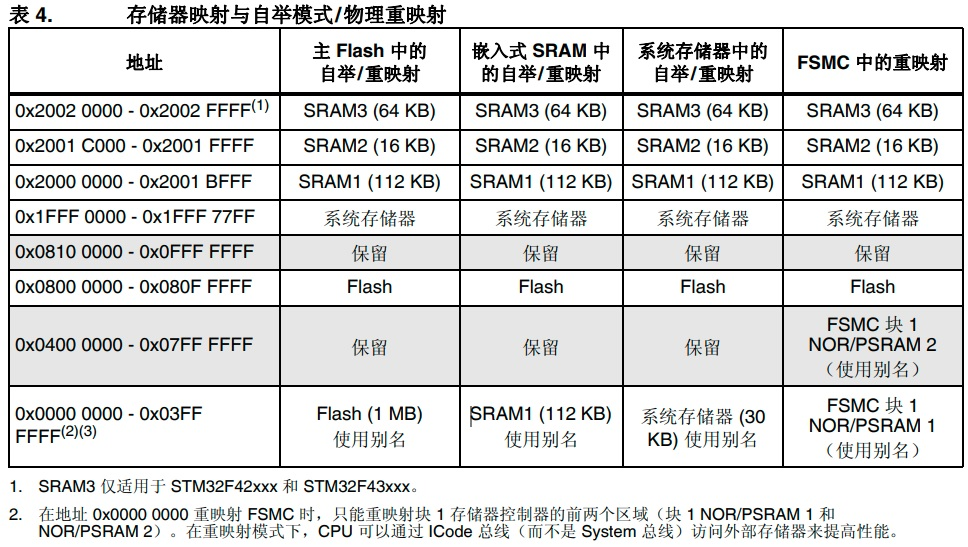
STM32F429汇编指令
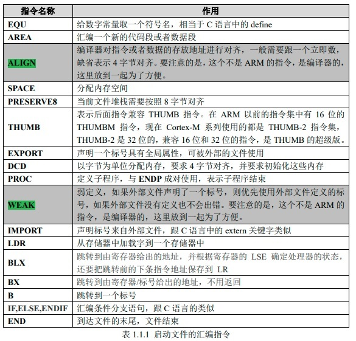
关于其他更多的 ARM 汇编指令，我们可以通过 MDK 的索引搜索工具中搜索找到。打开索引搜索工具的方法：MDK->Help->uVision Help
STM32F429启动过程
● 栈空间开辟
开辟栈空间的源代码如下：
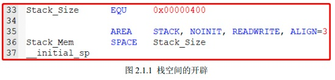
33 行 EQU：宏定义的伪指令，给数字常量取一个符号名，类似与 C 中的 define。定义栈大小为 0x00000400 字节，即 1024B（1KB），常量的符号是 Stack_Size。
35 行 AREA 汇编一个新的代码段或者数据段。段名为 STACK，段名可以任意命名；NOINIT 表示不初始化； READWRITE 表示可读可写；ALIGN=3，表示按照 2^3 对齐，即 8 字节对齐。
36 行 SPACE 分配内存指令，分配大小为 Stack_Size 字节连续的存储单元给栈空间。
37 行__initial_sp 紧挨着 SPACE 放置，表示栈的结束地址，栈是从高往低生长，所以结束地址就是栈顶地址。
栈主要用于存放局部变量，函数形参等，属于编译器自动分配和释放的内存，栈的大小不能超过内部 SRAM 的大小。如果工程的程序量比较大，定义的局部变量比较多，那么就需要在启动代码中修改栈的大小，即修改 Stack_Size 的值。如果程序出现了莫名其妙的错误，并进入了 HardFault 的时候，你就要考虑下是不是栈空间不够大，溢出了问题。
● 堆空间开辟
开辟堆空间的源代码如下：
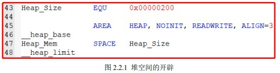
堆空间开辟代码跟栈空间开辟代码是类似的了。这部分代码的意思就是：开辟堆的大小为 0x00000200（512 字节），段名为 HEAP，不初始化，可读可写，8 字节对齐。__heap_base表示堆的起始地址，__heap_limit 表示堆的结束地址。堆和栈的生长方向相反的，堆是由低向高生长，而栈是从高往低生长。
堆主要用于动态内存的分配，像 malloc()、calloc()和 realloc()等函数申请的内存就在堆上面。堆中的内存一般由程序员分配和释放，若程序员不释放，程序结束时可能由操作系统回收。
接下来是 PRESERVE8 和 THUMB 指令两行代码。如图下图所示。
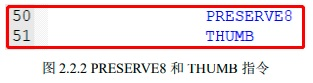
PRESERVE8：指示编译器按照 8 字节对齐。
THUMB：指示编译器之后的指令为 THUMB 指令。
注意：由于正点原子提供了独立的内存管理实现方式(mymalloc，myfree 等)，并不需要使用 C 库的 malloc 和 free 等函数，也就用不到堆空间，因此我们可以设置 Heap_Size 的大小为 0，以节省内存空间。
● 中断向量表定义
中断向量表定义代码：
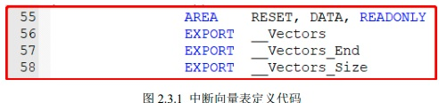
定义一个数据段，名字为 RESET, READONLY 表示只读。EXPORT 表示声明一个标号具有全局属性，可被外部的文件使用。这里是声明了__Vectors、__Vectors_End 和__Vectors_Size 三个标号具有全局性，可被外部的文件使用。
当内核响应了一个发生的异常后，对应的异常服务例程(ESR)就会执行。为了决定 ESR的入口地址， 内核使用了向量表查表机制。向量表其实是一个 WORD（32 位整数）数组，每个下标对应一种异常，该下标元素的值则是该 ESR 的入口地址。向量表在地址空间中的位置是可以设置的，通过 NVIC 中的一个重定位寄存器来指出向量表的地址。在复位后，该寄存器的值为 0。因此，在地址 0 （即 FLASH 地址 0） 处必须包含一张向量表，用于初始时的异常分配。
Stm32F429的中断向量表如下：
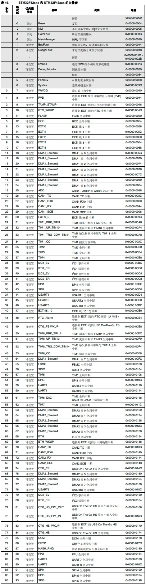
举个具体的例子：如果发生了 SVCall 异常（异常编号为 11），则 NVIC 会计算出偏移量为 11×4=44 字节=0x2C，然后从地址 0x0000002C 处取出 SVCall 服务例程的入口地址并跳入执行。
需要注意的是，地址 0x00000000 是一个特例——它存储的并不是什么异常服务例程的入口地址，而是给出了复位后 MSP（主堆栈指针）的初始值。真正的第一个异常入口地址（Reset_Handler）存放在 0x00000004 处。
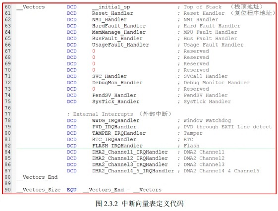
● 复位程序
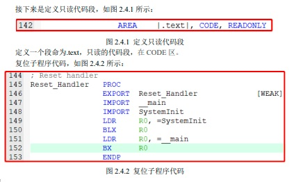
利用 PROC、ENDP 这一对伪指令把程序段分为若干个过程，使程序的结构加清晰。
145 行子程序开始
146 行声明复位中断向量 Reset_Handler 为全局属性，这样外部文件就可以调用此复位中断服务。WEAK：表示弱定义，如果外部文件优先定义了该标号则首先引用外部定义的标号，如果外部文件没有声明也不会出错。这里表示复位子程序可以由用户在其他文件重新实现，这里并不是唯一的。
147 行和 148 行 IMPORT 表示该标号来自外部文件。这里表示 SystemInit 和__main 这两个函数均来自外部的文件。
149 行 LDR 表示从存储器中加载字到一个存储器中。SystemInit 是一个标准的库函数，在 system_stm32f1xx.c 文件中定义，主要作用是配置系统时钟、还有就是初始化 FSMC/FMC 总线上外挂的 SRAM(可选)，前面说配置外部 SRAM 作为数据存储器（可选）就是这个。
150 行 BLX 表示跳转到由寄存器给出的地址，并根据寄存器的 LSE 确定处理器的状态，还要把跳转前的下条指令地址保存到 LR。
151 行把__main 的地址给 R0。__main 是一个标准的 C 库函数，主要作用是初始化用户堆栈和变量等，最终调用 main 函数去到 C 的世界。这就是为什么我们写的程序都有一个 main 函数的原因，如果不调用__main，那么程序最终就不会调用我们 C 文件里面的 main，也就无法正常运行。
152 行 BX 表示跳转到由寄存器/标号给出的地址，不用返回。这里表示切换到__main 地址，最终调用 main 函数，不返回，进入 C 的世界。
153 行 ENDP 表示子程序结束。LDR、BLX、BX 是内核的指令，可在《CM3 权威指南 CnR2》第四章-指令集里面查询到。
示例
● 系统启动流程
在以前 ARM7/ARM9 内核的控制器在复位后，CPU 会从存储空间的绝对地址 0x00000000 取出第一条指令执行复位中断服务程序的方式启动，即固定了复位后的起始地址为 0x00000000（PC = 0x00000000），同时中断向量表的位置也是固定的。而 Cortex-M3 内核复位后的起始地址和中断向量表的位置可以被重映射。重映射的方法是通过启动模式的选择，有以下 3 种情况：
1、通过 boot 引脚设置可以将中断向量表定位于 SRAM 区，即起始地址为 0x2000000，同时复位后 PC 指针位于 0x2000000 处；
2、通过 boot 引脚设置可以将中断向量表定位于 FLASH 区，即起始地址为 0x8000000，同时复位后 PC 指针位于 0x8000000 处；
3、通过 boot 引脚设置可以将中断向量表定位于内置 Bootloader 区，本文不对这种情况做论述。
Cortex-M3 内核规定，起始地址必须存放堆顶指针，而第二个地址则必须存放复位中断入口向量地址，这样在 Cortex-M3 内核复位后，会自动从起始地址的下一个 32 位空间取出复位中断入口向量，跳转执行复位中断服务程序。
下面将结合《Cortex-M3 权威指南 (中文)》chpt03-复位序列的内容进行讲解。
启动模式不同，启动的起始地址是不一样的，下面我们以代码下载到内部 FLASH 的情况举例，即代码从地址 0x0800 0000 开始被执行。
我们知道的复位方式有三种：上电复位，硬件复位和软件复位。当产生复位，并且离开复位状态后，CM3 内核做的第一件事就是读取下列两个 32 位整数的值：
(1)从地址 0x0800 0000 处取出堆栈指针 MSP 的初始值，该值就是栈顶地址。
(2) 从地址 0x0800 0004 处取出程序计数器指针 PC 的初始值，该值指向复位后执行的第一条指令。下面用示意图表示，如图 3.1 所示。
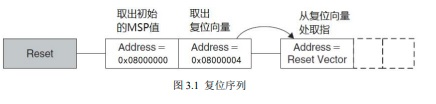
我们看看战舰开发板 HAL 库例程的实验 1 跑马灯实验中，取出的 MPS 和 PC 的值是多少，方法如图 3.2 所示。
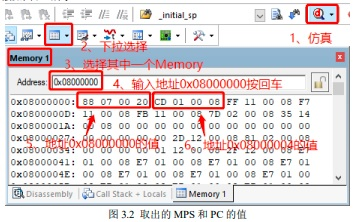
由图 3.2 可以知道地址 0x08000000 的值是 0x20000788，地址 0x08000004 的值是 0x080001CD，即堆栈指针 SP = 0x20000788，程序计数器指针 PC = 0x080001CD。因为 CM3 内核是小端模式，所以倒着读。
请注意，这与传统的 ARM 架构不同——其实也和绝大多数的其它单片机不同。传统的 ARM 架构总是从 0 地址开始执行第一条指令。它们的 0 地址处总是一条跳转指令。而在 CM3 内核中，0 地址处提供 MSP 的初始值，然后就是向量表（向量表在以后还可以被移至其它位置）。向量表中的数值是 32 位的地址，而不是跳转指令。向量表的第一个条目指向复位后应执行的第一条指令，就是 Reset_Handler 这个函数。下面继续以战舰开发板 HAL 库例程的实验 1 跑马灯实验为例，代码从地址 0x0800 0000 开始被执行，讲解一下系统启动，初始化堆栈、MSP 和 PC 后的内存情况。
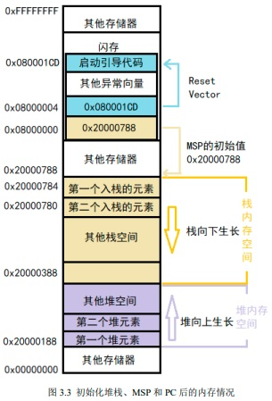
因为 CM3 使用的是向下生长的满栈，所以 MSP 的初始值必须是堆栈内存的末地址加 1。举例来说，如果你的栈区域在 0x20000388-0x20000787 之间，那么 MSP 的初始值就必须是 0x20000788。
向量表跟随在 MSP 的初始值之后——也就是第 2 个表目。
R15 是程序计数器，在汇编代码中，可以使用名字"PC"来访问它。ARM 规定：PC 最低两位并不表示真实地址，最低位 LSB 用于表示是 ARM 指令 (0) 还是 Thumb 指令 (1)，因为 CM3 主要执行 Thumb 指令，所以这些指令的最低位都是 1（都是奇数）。因为 CM3 内部使用了指令流水线，读 PC 时返回的值是当前指令的地址 +4。比如说：
0x1000: MOV R0, PC ; R0 = 0x1004
如果向 PC 写数据，就会引起一次程序的分支（但是不更新 LR 寄存器）。CM3 中的指令至少是半字对齐的，所以 PC 的 LSB 总是读回 0。然而，在分支时，无论是直接写 PC 的值还是使用分支指令，都必须保证加载到 PC 的数值是奇数（即 LSB=1），表明是在 Thumb 状态下执行。倘若写了 0，则视为转入 ARM 模式，CM3 将产生一个 fault 异常。
正因为上述原因，图 3.3 中使用 0x080001CD 来表达地址 0x080001CC。当 0x080001CD 处的指令得到执行后，就正式开始了程序的执行（即去到 C 的世界）。所以在此之前初始化 MSP 是必需的，因为可能第 1 条指令还没执行就会被 NMI 或是其它 fault 打断。MSP 初始化好后就已经为它们的服务例程准备好了堆栈。